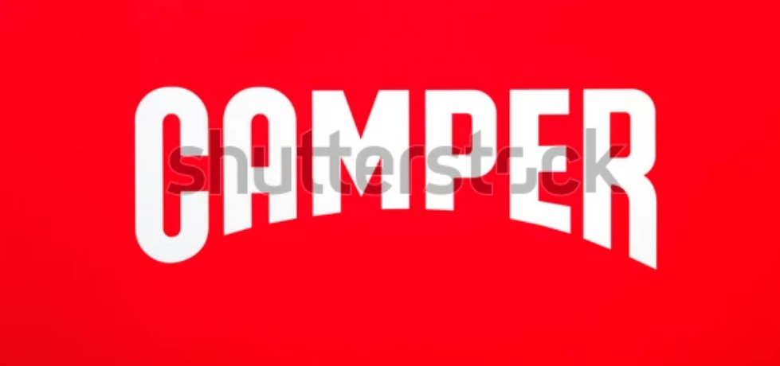

Проект за ADVB600 Маркетингова стратегия
Екип: Даниел Каменов, Дейвид Досев, Мадлен Илиева, Андрей Тошев
Описание: В тази задача трябваше да си харесаме бранд и да създадем изцяло нов продукт и маркетингова стратегия за него. Избрахме бранда Camper, тъй като се движат в по-екологична посока и решихме, че искаме да създадем иновативен продукт, който да промени света на футбола.
Роля: Проучване на пазарна на футболни обувки, потенциалната конкуренция и шансът такъв продукт да пробие и да бъде следващото голямо нещо.
Цели: 100000 продадени бройки, световно еко производство
Проблем: Няма футболни обувки на пазара, които да са от 100% рециклирани материали, но в същото време навлизайки в този продуктов сегмент имаме много висока конкуренция.
Таргет: Физически активни,Фенове на футбола, Участват в аматьорски футболен отбор, Разпускат с футбол след работа, Прекарват много време навън, Опазват природата, Интересуват се от ценностите на марките, Смели и оригинални
Инсайт: Искам нещо удобно, с което да знам, че опазвам околната среда, докато играя футбол.
Предизвикателство: Да докажем, че футболните обувки от рециклиран материал могат да са удобни.
Медии: Ютюб, Фейсбук, Инстаграм, UEFA, RCD Mallorca